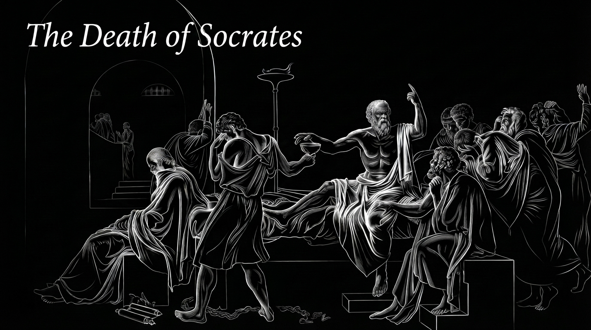

What is Infacto?
Infacto is the flagship debating event of the Orator Club, IIIT Nagpur. It is an inter-college debate competition open to students from colleges across the country, bringing together teams to compete in a fast-paced test of argumentation, logic, adaptability, and public speaking. With 2-member teams and an Oxford-style debate format, Infacto goes beyond conventional debating. Participants are not merely tested on how well they can prepare an argument—they are challenged to respond to their opponents, identify weaknesses in their reasoning, and defend their position under pressure. With 70 teams participating in the previous edition, Infacto aims to create a competitive yet intellectually engaging environment where every debate becomes a battle of ideas.


When Athens condemned Socrates to drink the hemlock, it did not merely kill a man — it revealed what a society does when questioning becomes unbearable to it. Socrates' crime was never blasphemy or corrupting the youth in any literal sense; his true offense was refusing to let any idea, however sacred, go unexamined. He was executed not for having answers but for insisting on the question. And in that sense, the death of Socrates was the first great symbol of philosophy's fate in every age since: a civilization can tolerate an idea, but it rarely tolerates the relentless interrogation of its ideas. Today that same hemlock is administered more slowly, and more quietly — not through trial and execution, but through distraction, through the noise of endless information mistaken for discourse, through a culture that prizes the speed of an opinion over the patience of a question. Philosophy has not been outlawed; it has simply been starved of the silence and the conflict it needs to breathe. Socrates died because Athens could not bear to keep questioning itself. We, perhaps, are dying more slowly — not because we were forced to stop asking, but because we chose, almost without noticing, to stop.
Infacto 5.0
Infacto 5.0 marks a deliberate departure from the tradition the event has followed so far. Where previous editions centered the debate squarely on geopolitics, this edition refuses to be confined to that single lens. Infacto 5.0 broadens its horizons, opening the floor to both political and philosophical discourse — inviting participants not just to argue over policy and power, but to grapple with the deeper questions of ideas, ethics, and thought that underpin them. It's a leap forward for the event, signaling that Infacto is no longer just a stage for political debate, but a space for wider intellectual exploration. This shift reflects a belief that the sharpest arguments don't emerge from politics alone — they emerge when political reasoning is tested against philosophical scrutiny, and when abstract ideas are pressure-tested against real-world consequence. In expanding its scope, Infacto 5.0 challenges debaters to move beyond rehearsed positions and engage with questions that don't have easy, pre-packaged answers.

Prizepool
₹0+